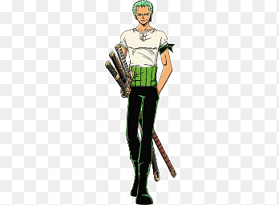
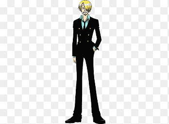
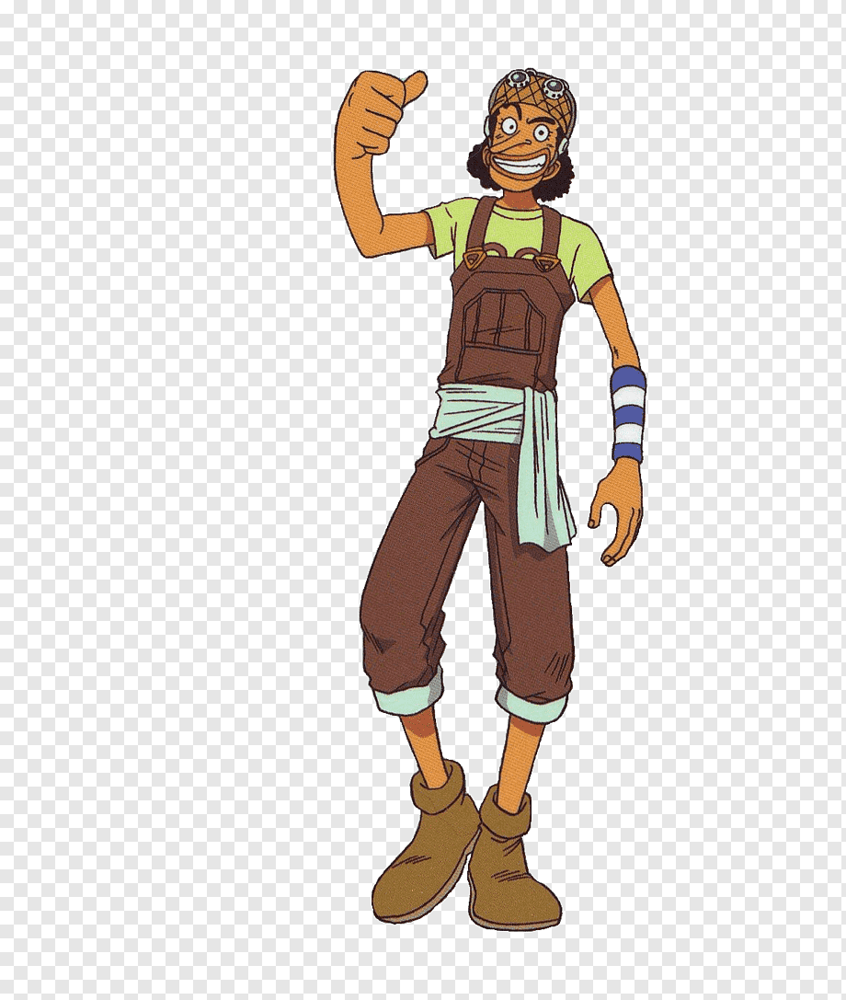

HISTORIA DE ONE PIECE
One Piece es un manga y anime creado por Eiichiro Oda que sigue las aventuras de Monkey D. Luffy, un joven que busca convertirse en el Rey de los Piratas. Luffy tiene un poder especial gracias a comer una fruta del diablo, la Gomu Gomu no Mi, que le da habilidades elásticas. Junto con su tripulación, los "Sombrero de Paja", Luffy navega por el Grand Line en busca del legendario tesoro conocido como One Piece, que otorgará al que lo encuentre el título de Rey de los Piratas. La historia está llena de batallas, amistades, exploraciones y misterios, mientras los personajes enfrentan desafíos en un mundo lleno de piratas, marines y criaturas fantásticas.
PERSONAJES DE ONE PIECE
Monkey D. Luffy
Monkey D. Luffy es el protagonista principal de One Piece. Es un joven optimista, valiente y con un fuerte sentido de justicia. Luffy tiene el sueño de convertirse en el Rey de los Piratas y encontrar el legendario tesoro One Piece. Después de comer la Gomu Gomu no Mi, una fruta del diablo, su cuerpo se vuelve elástico, lo que le permite realizar increíbles ataques y movimientos. A pesar de ser impulsivo y a veces ingenuo, Luffy es leal a sus amigos y siempre está dispuesto a luchar por lo que cree que es correcto. Su personalidad y determinación lo convierten en un líder natural para su tripulación.
Nami
Nami es una de las principales miembros de la tripulación de los Sombrero de Paja en One Piece. Es la navegante del barco y tiene un increíble talento para leer mapas y navegar a través de los mares, lo cual es esencial para el viaje de la tripulación en el Grand Line. Nami es inteligente, astuta y a menudo se muestra como una persona algo egoísta, especialmente cuando se trata de dinero, pero su lealtad hacia sus amigos es inquebrantable. Su sueño es crear un mapa completo del mundo. Nami también es una gran luchadora, utilizando un arma llamada "Clima-Tact", que le permite manipular el clima para atacar a sus enemigos.
Zoro
Roronoa Zoro es uno de los principales miembros de la tripulación de los Sombrero de Paja en One Piece y el espadachín del grupo. Su sueño es convertirse en el mejor espadachín del mundo, un objetivo que lo motiva a entrenar incansablemente. Zoro es conocido por su habilidad con tres espadas, técnica conocida como Santoryu, en la que empuña una espada en cada mano y una tercera con la boca. Es un guerrero extremadamente fuerte y resistente, pero a menudo es un poco torpe y desorientado, lo que le da un toque cómico. Zoro es leal, serio en las batallas y siempre dispuesto a proteger a sus amigos, mostrando una gran determinación para lograr su sueño.

Chopper
Tony Tony Chopper es uno de los miembros de la tripulación de los Sombrero de Paja en One Piece y el médico del grupo. Es una pequeña reno que comió la Hito Hito no Mi, una fruta del diablo que le permitió transformarse en humano, lo que le da la capacidad de cambiar de forma gracias a su habilidad con el Rumble Ball. Chopper es tierno y algo inocente, pero también es muy dedicado a su trabajo como médico, siempre preocupado por la salud de sus compañeros. Su sueño es convertirse en un gran médico que pueda curar cualquier enfermedad. A pesar de su apariencia dulce y su personalidad amable, Chopper también es valiente y no duda en luchar cuando es necesario para proteger a sus amigos.
Sanji
Sanji es uno de los miembros principales de los Sombrero de Paja en One Piece y el cocinero de la tripulación. Es un hombre elegante, con una gran pasión por la cocina y un sueño de encontrar el "All Blue", un mar legendario donde se mezclan todos los océanos del mundo y donde se pueden encontrar todos los ingredientes para hacer la mejor comida. Sanji es conocido por su habilidad excepcional en la cocina, así como por su estilo de lucha único, utilizando principalmente sus piernas en combate, lo que lo convierte en un luchador muy peligroso. Aunque tiene una actitud algo arrogante y suele ser muy galante con las mujeres, es leal y protector con sus amigos, siempre dispuesto a arriesgarse para proteger a la tripulación y a sus seres queridos.

Nico Robin
Nico Robin es una de las miembros más importantes de los Sombrero de Paja en One Piece y la arqueóloga del grupo. Su sueño es descubrir el "Siglo Vacío", un período de la historia del mundo que ha sido borrado de los registros, y que se cree contiene secretos cruciales para entender el verdadero pasado del mundo. Robin tiene la habilidad de hacer que aparezcan partes de su cuerpo, especialmente manos, en cualquier superficie gracias a los poderes de la Hana Hana no Mi, una fruta del diablo que le otorga esta capacidad.

Usopp
Usopp es uno de los miembros de los Sombrero de Paja en One Piece y el francotirador del grupo. Es conocido por su habilidad para crear y usar una variedad de armas, como su famoso rifle, y por su talento como inventor. Aunque inicialmente es un mentiroso y tiene una personalidad algo cobarde, Usopp crece a lo largo de la serie, demostrando ser un gran luchador y un amigo leal. Su sueño es convertirse en un valiente guerrero del mar, como su padre, Yasopp, quien es un miembro de los Piratas de Shanks. A pesar de su miedo a menudo, Usopp demuestra una gran valentía cuando es necesario, luchando por proteger a su tripulación y sus amigos. También tiene un sentido del humor muy característico, y sus bromas y su ingenio lo convierten en un miembro valioso y querido dentro de la tripulación.

Brook
Brook es uno de los miembros de los Sombrero de Paja en One Piece y el músico de la tripulación. Es un esqueleto viviente debido a los poderes de la Yomi Yomi no Mi, una fruta del diablo que le permitió revivir después de morir. A pesar de su apariencia de esqueleto, Brook es un hombre alegre, educado y con un gran amor por la música. Su instrumento principal es un violín, y su habilidad para tocar música es excepcional. Además, tiene la capacidad de usar su alma y su espíritu para realizar técnicas especiales, como su habilidad para separarse de su cuerpo y moverse a gran velocidad.